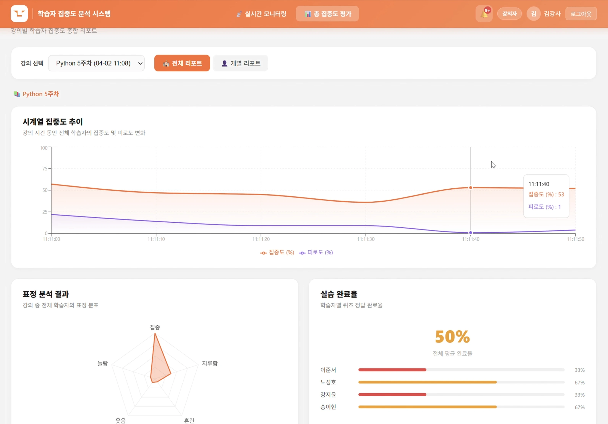
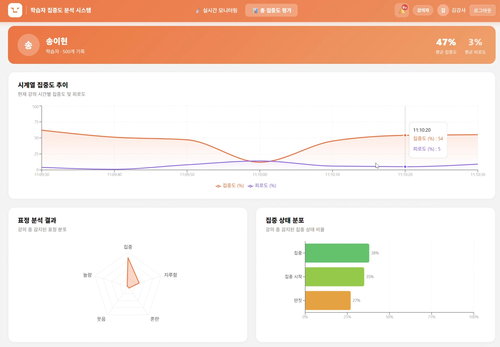
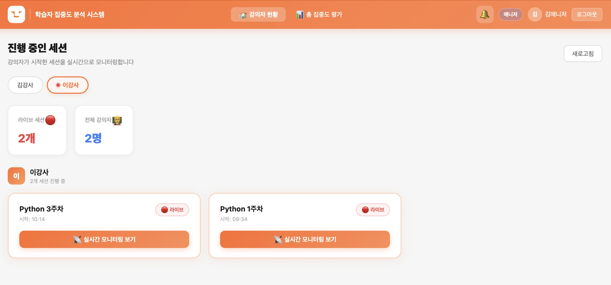

📌 프로젝트 목표
기존 온라인 강의는 학습자의 반응을 즉각적으로 확인하기 어렵다는 한계가 있었습니다. 본 플랫폼은 학습자의 웹캠 하나로 표정·시선·자세·핸드폰 사용 여부를 AI로 실시간 분석하여 강의자에게 즉각 피드백을 제공하고, 세션 종료 후 Gemini LLM 기반 강의 개선 리포트를 자동 생성하는 에듀테크 플랫폼입니다.

📌 My Main Contributions
- AI 감지 모듈 설계 및 집중도 스코어링 엔진 구현 — 시선(Iris Gaze Yaw/Pitch)·머리 방향(solvePnP)·어깨 자세를 종합한 집중도 공식 직접 설계, EMA 스무딩 및 상태 확정 로직 구현
- 피로도 스코어링 설계 — EAR·경과시간·시선고착·머리움직임 4가지 신호 가중 합산 공식 설계 및 안정화 (보정 2회 반복)
- FastAPI + WebSocket 실시간 아키텍처 설계·구현 — 학습자 ↔ 서버 ↔ 강의자 3자 간 데이터 흐름 전체 설계, UUID 세션 관리·Ping-Pong keepalive·KST 타임존 통일
- React 프론트엔드 개발 (강의자·학습자·매니저 3화면) — Recharts 기반 집중도 추이·레이더 차트, 카테고리 필터, 졸음/핸드폰 토스트 알림 구현
- Gemini LLM 리포트 통합 — 세션 데이터 자동 요약 및 강의 개선 코멘트 생성 파이프라인 구축
- GCP·Vercel 클라우드 배포 — FastAPI·PostgreSQL·Nginx(HTTPS) 구성 및 Vercel 프론트엔드 배포, DuckDNS 도메인 연동
📌 사용자 구성
- 학습자 — 웹캠 기반 집중도 데이터 생성 대상. URL 접속만으로 즉시 감지 시작
- 강사 — 실시간 모니터링 및 강의 종료 후 리포트 확인 (본인 담당 강의만)
- 매니저 — 전체 강의·학습자 현황 관리 및 통합 분석 (모든 강의 접근)
📌 핵심 기능
① 집중도·피로도 스코어링 엔진 (직접 설계)
MediaPipe FaceLandmarker를 브라우저에서 실행하여 5가지 신호를 멀티모달로 통합·스코어링합니다.
집중도 공식 (focus_score)
focus = gaze_score × 0.60 + head_score × 0.40 − shoulder_penalty × 0.10
- gaze_score: 시선 범위 이탈 여부 → 정면 1.0 / 이탈 0.0
- head_score: solvePnP pitch/yaw/roll → 정면 1.0 / 이탈 0.0
- EMA 스무딩 (α=0.05) + 20~25프레임 상태 확정
피로도 공식 (fatigue_score)
fatigue = EAR×0.25 + 경과시간×0.35 + 시선고착×0.25 + 머리움직임×0.15
- EAR: EMA(α=0.005)로 눈 감음 누적
- 경과시간: 강의 90분 → 피로도 0.60 기여
- 시선고착: 30초 프리즈 여부 감지
- 머리움직임: 30초 미만 움직임 없음 감지
② 감정(표정) 분류 — RandomForest 5-class
- MediaPipe blendshape 52개 → 82개 피처로 확장하여 RandomForest 모델 입력
- 집중·지루함·혼란·웃음·놀람 5-class 실시간 분류, 약 1초 단위 갱신
- 혼란 보정 Binary Classifier 통합하여 오분류 감소
③ 핸드폰 감지 — YOLOv11s (Google Colab GPU)
- 브라우저에서 HTTP multipart로 프레임 전송 → Colab FastAPI 서버에서 YOLOv11s 추론
- 핸드폰 감지 시 강의자 화면에 즉시 토스트 알림 (쿨다운 30초)
- 졸음 감지 알림 쿨다운 1분 제어
④ 강의자 실시간 대시보드

- 강의 전체 평균 집중도 실시간 표시 (상단)
- 학습자별 상태 카드: 이름 · 집중도(%) · 피로도(%) · 눈 깜빡임(횟수/min) · 표정 이모지
- 카테고리 필터: 전체 / 집중 / 딴짓 / 졸음 / 핸드폰
- 핸드폰 감지 시 카드 직접 표시 대신 Notification 토스트로 즉시 안내

⑤ 세션 종료 후 AI 리포트


- 집중도 추이 그래프 — 강의 시간대별 집중도 변화 시계열 라인 차트 (Recharts)
- 표정 분포 레이더 차트 — 집중·놀람·지루함·웃음·혼란 분포 시각화
- 실습 제출률 — 전체 학습자 대비 제출 비율, 학습자별 정답률 확인
- Gemini LLM 총평 — 전체 평균 집중도·피로도·참여 학생 수·퀴즈 완료율을 바탕으로 강의 개선 코멘트 자동 생성

- 매니저 대시보드 — 강의별 탭으로 라이브 세션 현황 확인 및 진행 중인 세션 실시간 모니터링 진입

🖼 매니저 대시보드img/project5_manager.webp 파일을 추가하세요📌 시스템 아키텍처

- WebSocket 엔드포인트 2종 설계
# 학습자 감지 클라이언트
@app.websocket("/ws/client/{session_id}/{user_id}")
# 강의자/매니저 대시보드 브로드캐스트
@app.websocket("/ws/dashboard/{session_id}")
- UUID 기반 세션 관리 + 자동 재연결 · Ping-Pong keepalive 구현
- PostgreSQL ThreadedConnectionPool로 다중 WebSocket 동시성 처리
- KST 타임존 통일 — 서버·DB 전체 UTC+9 일관성 확보
- 강의자 화면 브로드캐스트 + 학습자 화면 동기화 동시 구현
📌 배포 구성
- 학습자 앱 (포트 3000) — 웹캠 감지 전용 React 19 (Vite) 앱
- 강의자/매니저 앱 (포트 3001) — 대시보드 전용 React 19 (Vite) 앱
- GCP VM — FastAPI · PostgreSQL · Nginx (HTTPS/WSS 프록시)
- Vercel — 프론트엔드 배포 (DuckDNS 도메인 HTTPS 연동)
- Google Colab + ngrok — YOLOv11s GPU 추론 서버
📌 문제 해결 경험
문제 1. 스코어러 보정 오류 — 집중도 점수 과소/과대 평가
상황
초기 집중도 스코어러가 특정 자세·조명 조건에서 비정상적인 점수를 출력. (scorer fixed → scorer calibrate fixed 2단계 수정)
해결
EMA 스무딩 파라미터(α=0.05) 재조정 + 상태 전환 확정 프레임 수(20~25프레임) 조건부 설계 + 보정 계수 캘리브레이션으로 0~100 범위 안정화
문제 2. Colab 서버 → WebSocket 반환값 없음 (CORS)
상황
Colab 서버로 프레임 전송 시 모델 추론은 정상(로그에 pass=True)이지만 브라우저에서 결과값이 항상 {} 반환. colabSender.js의 catch 블록이 에러를 조용히 삼켜 원인 파악이 지연됨.
# 원인: Vercel(https) → Colab ngrok(https) 크로스 오리진 요청 시
# CORSMiddleware 없어 브라우저가 preflight 요청을 차단
# 해결: Colab FastAPI에 CORS 미들웨어 추가
from fastapi.middleware.cors import CORSMiddleware
app = FastAPI(title='Focus Analyzer - Colab Model Server')
app.add_middleware(
CORSMiddleware,
allow_origins=['*'],
allow_methods=['*'],
allow_headers=['*'],
)
해결
Colab FastAPI 서버에 CORSMiddleware 추가 → 브라우저의 preflight OPTIONS 요청 정상 통과 → 프레임 전송·추론 결과 수신 정상화
문제 3. 피로도 로직 개선 — 단순 EAR 기반 오탐
상황
초기 피로도가 EAR 단독 지표에 의존 → 안경 착용자·조명 변화 시 오탐 발생
해결
단일 EAR → 멀티 피처 가중 합산 공식 재설계 (fatigue logic modified): 시선 고착 패턴(30초 프리즈) + 머리 움직임 감소 지표 추가 → 가중치 최적화로 다양한 환경 대응력 향상
📌 개발 마일스톤
Week 1 (2026.03.16~20) — 핵심 감지 엔진 구축
- ✅ 시선/머리/어깨 감지 초기 구현
- ✅ 집중도·피로도 스코어러 초기 설계
- ✅ Colab GPU 표정 분류 서버 구성
- ✅ YOLOv8 핸드폰 감지 모듈 추가 (팀원)
Week 2 (2026.03.23~27) — 서버 아키텍처 전환 + 실시간 연동
- ✅ FastAPI + WebSocket 새 아키텍처 전환
- ✅ 학습자 프론트엔드 + UUID 세션 관리 구현
- ✅ 강의자 브로드캐스트 + 학습자 화면 동기화
- ✅ 타임존 불일치 문제 해결 (KST 통일)
- ✅ 로그인 기능 + 실시간 모니터링 알림 연결
Week 3 (2026.03.30~04.02) — 기능 완성 + 배포
- ✅ 피로도 로직 개선
- ✅ 표정 모델 교체 + Gemini AI 리포트 통합
- ✅ 과제 제출률 DB 연동 + 리포트 페이지 실데이터 연결
- ✅ Vercel 프론트엔드 배포
- ✅ 스코어러 보정 수정